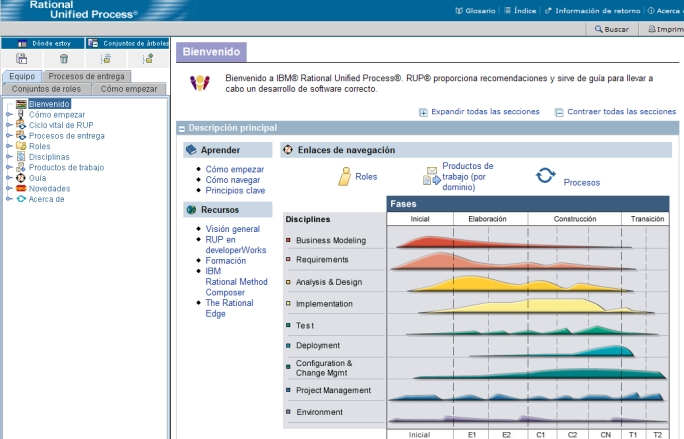

| Navegación por el sitio web de métodos |
 |
|
|
El sitio web del método consta de un conjunto de páginas HTML que puede ver con los navegadores Microsoft® Internet Explorer, Mozilla y Firefox. Nota: algunas funciones, como Buscar y My View, implementadas como applets precisan JRE 1.4.2 o superior (puede bajar un JRE de http://java.sun.com/j2se). Como alternativa, puede publicar una configuración sin applets, que no tiene las funciones Buscar y My View, pero no precisa un JRE. Si el sitio que está visitando se publicó sin applets, entonces ni Buscar ni My View estarán presentes. La figura siguiente muestra los principales elementos utilizados para examinar el sitio web del método. Seleccione cualquier área de la figura si desea una breve explicación de cómo efectuar la navegación.  Elementos del entorno del navegadorGlosarioSi pulsa este botón se abrirá otra ventana que contiene el glosario con la lista alfabética de los términos utilizados en el sitio web del método, así como definiciones y enlaces con páginas de ejemplo. ÍndiceSi pulsa el botón de Índice se abre otra ventana que contiene la lista alfabética de los temas del sitio web del método. Si pulsa un hiperenlace, la página relacionada aparece en la ventana principal. ComentariosSi pulsa el botón de Comentarios se abre otra ventana que contiene un mensaje de correo electrónico para comentarios de Rational, que hace referencia automáticamente a la página que aparece en la ventana principal. Acerca deSi pulsa el botón de Acerca de se abre una ventana emergente con el número de versión actual del copyright. Buscar
La búsqueda permite especificar una palabra clave y buscarla en el proceso, de forma que todas las páginas que son
relevantes para ese tema aparezcan en la ventana de resultados de la búsqueda. El programa de utilidad de búsqueda
funciona con los temas de palabras clave, en vez de buscar cadenas de caracteres en las páginas de contenido del
proceso. ImprimirEl botón Imprimir envía el contenido de la ventana principal a la impresora. Marco de contenido principalEste marco es en el que se muestra el contenido del método. El contenido está organizado en secciones que se pueden ampliar y contraer. VistasUna vista le permite navegar y utilizar un sitio web del método desde una perspectiva diferente. Estos son algunos ejemplos de vistas:
Herramientas para crear una vista personalizadasEstas herramientas le permiten crear de forma fácil y rápida una vista personalizada del sitio web del método. Consulte la sección Material de soporte: My View para obtener información sobre cómo utilizar estas herramientas. |
© Copyright IBM Corp. 1987, 2005 Reservados todos los derechos © Copyright IBM Corp. 1987, 2006. Reservados todos los derechos. |